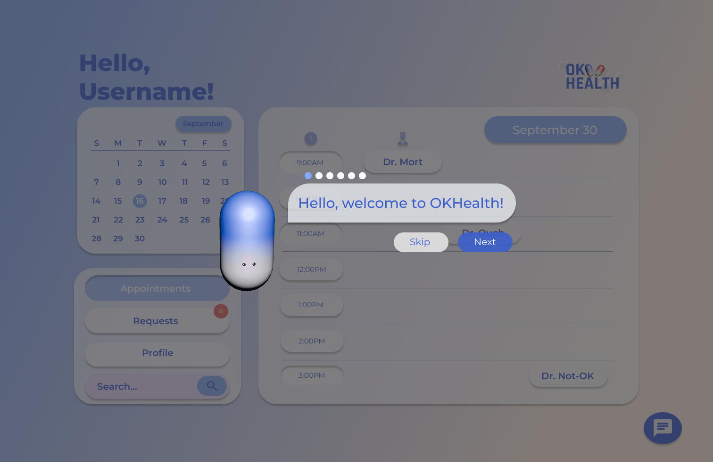
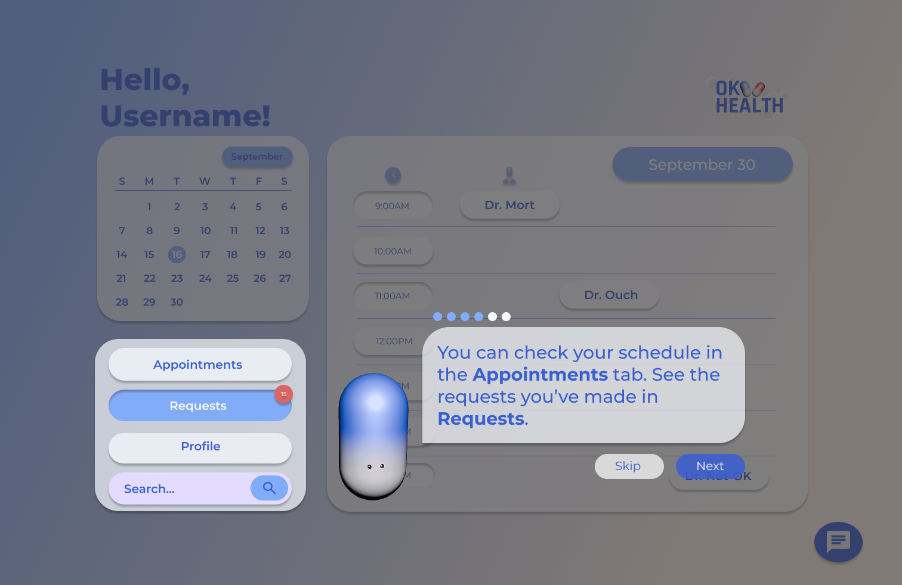
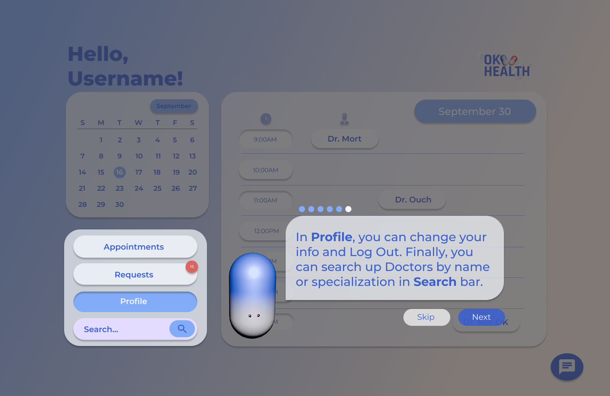
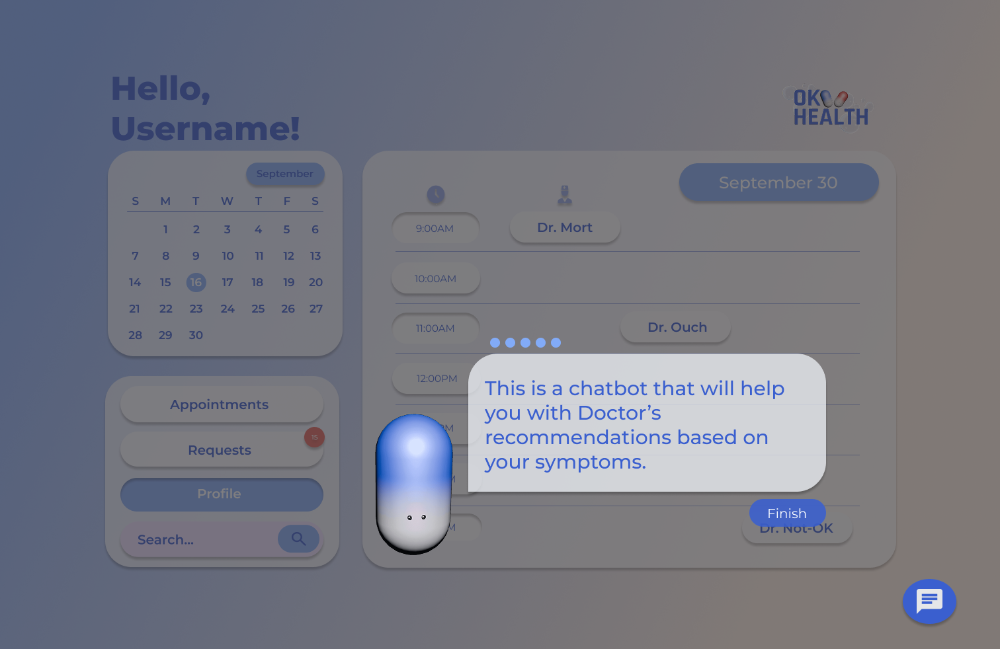

OKHealth
Onboarding
While the system does not strictly require a dedicated onboarding flow, it was designed to be accessible to users of varying ages and levels of computer literacy.
Given the formal context of a medical application, a light onboarding layer provides reassurance and orientation without adding unnecessary friction.




The onboarding introduces how navigation works — selecting a tab updates the content panel on the right, which is the core interaction of the app.
No Wheel Reinventing
The interface follows familiar patterns to reduce friction.
Core elements like the navigation bar and calendar stay visible, so key actions are always accessible.
The chatbot sits at the bottom, matching common web patterns.